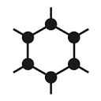
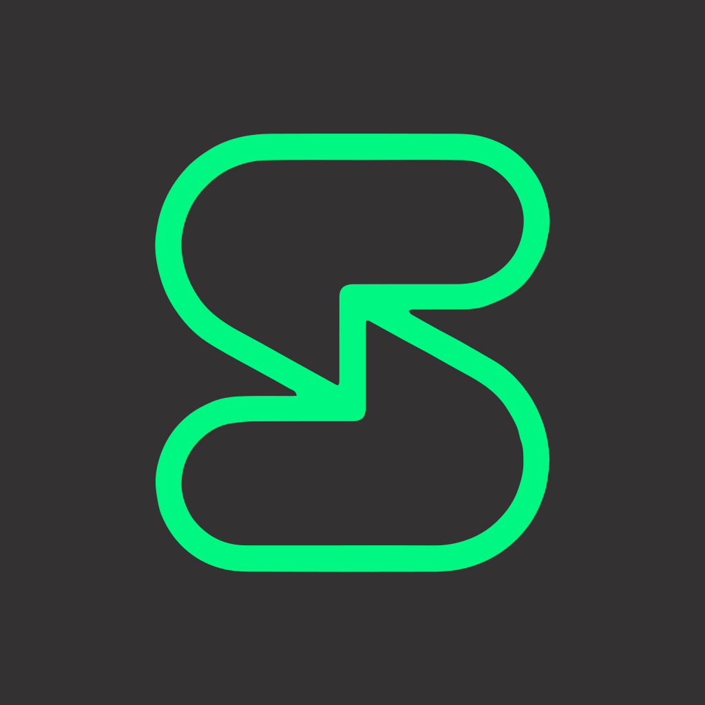
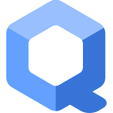
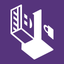

~/setups/hardened
Hardened Setup
last updated 2026-11-05 · 10 changes · weeks, then a practice · what changed
Hardened is the strongest practical setup on this site, for people with a real threat.
The friction is real and daily. This page is a strong baseline and does not replace
advice written for your own situation.
get help first
These groups are free, current, and run by people who do this professionally:
Access Now's Digital Security Helpline, the EFF's Surveillance Self-Defense guides,
and Freedom of the Press Foundation's training materials. For threats from a partner
or family member, the Coalition Against Stalkerware lists vetted local resources.
If you are in danger now, contact one of them before changing anything.
what this replaces
Hardened builds on
Essentials and
Standard, and swaps out a few pieces.
Mullvad replaces Proton VPN. GrapheneOS replaces your phone's stock system.
Qubes replaces your normal computer for sensitive work. Your Standard domain and
Proton account stay in your everyday compartment, and sensitive work gets its own
accounts. At this level, habits beat tools: the most common failure is reusing one
identity across two compartments, once.
start with the right track
A person is watching me
An ex-partner, relative, or coworker. Talk to a specialist first, because sudden
changes can alert them. Then do the cards marked person. The rest usually
isn't needed.
An organization or state
You are a journalist, activist, or researcher, or you work somewhere hostile.
Do every card, in order. The ones marked organization are written for you.
I'm just curious
Read on, but Standard is the right place to stop.
This level charges daily friction for protection most people don't need.
the setup

GrapheneOS on a Pixel
phone
~3 hreplaces: your phone's stock systemfor: person + organization
The job: Your phone is a sensor package in your pocket: location,
microphone, contacts. A hardened phone system replaces the stock one with a version
built so apps cannot reach what you haven't allowed.
Why GrapheneOS: It is the most hardened consumer phone system
available, it keeps Google optional, and it sandboxes every app from the rest.
Look for: Fast security updates, control over each app's
permissions, and an install process you can verify.
- Buy a supported Pixel, in cash and in person if purchase records are part of
your threat. Install with the official web installer from a computer you trust and
verify the fingerprints it shows.
- Set a strong unlock passphrase, turn on the duress PIN (a second PIN that wipes
the phone), and turn on auto-reboot so a seized phone returns to locked storage.
- Get apps from F-Droid and Aurora Store. If you need Google Play, install it in a
separate profile. Deny network access to any app that doesn't need it.
Compartmentalized identities
a habit
ongoing disciplinenewfor: person + organization
The job: Compartments are separate identities for separate parts of
your life, such as activism, work, and personal. Most unmasking comes from one
careless link between two of them, and compartments remove the links.
Why this one: It needs no software, and every tool below only works
if you keep the walls up. It is the actual hard part.
Look for: No shared emails, phone numbers, payment methods,
usernames, or writing habits between compartments.
- Write your compartments on paper, with what belongs in each. Two is manageable.
Four is a part-time job.
- Give each its own email account (separate accounts, not aliases of one), passwords,
and browser profile or device. Your Standard domain stays with the everyday one.
- Give sensitive compartments their own payment method: cash, Monero, or prepaid
cards bought with cash.
- Never cross over. No logging into one from another's browser, no shared profile
photos, no same turns of phrase. One slip can link years of history.
Mullvad
VPN
~20 minreplaces: Proton VPNfor: person + organization
The job: A VPN at this level must not know who you are. The sensitive
compartment needs one you can pay for without a name attached to the account.
Why Mullvad: It gives you a random account number instead of an email,
and you can pay with cash by post or Monero.
Look for: Payment you can make anonymously, sign-up without personal
details, and independent audits.
Backup: IVPN if you want another no-account VPN.
- Pay with cash by post or Monero, inside the sensitive compartment.
- Keep it always on, with the kill switch locked.

Session
messenger
~1 hbuilds on: Signalfor: person + organization
The job: At this level, who talks to whom, when, and how often matters
as much as what is said. Your sensitive chats need a messenger that asks for no phone
number or email and has no central server that can be forced to hand over records.
Why Session: It passes messages through community-run relays, so no
single company holds the records, and an account is just a generated ID. Keep Signal
for everyday chats.
Know the catch: Session has no forward secrecy yet, so a stolen
account key could expose past messages. Researchers found design flaws in 2026, and
the team shrank after a funding crisis. The Messengers page has the details.
Look for: No phone number or email required, little data kept, and
a way to keep talking when a network blocks messengers.
Backup: SimpleX or Signal are reasonable alternatives, especially
if Session is blocked where you are or your contacts won't switch. SimpleX has no
user identifiers at all. Signal needs a phone number, so use one that isn't yours if
your own number is a risk.
- Install Session and create an account. Share your ID only inside the right
compartment, and turn on disappearing messages by default.
- Confirm each contact's ID in person or over a channel you already trust, so
nobody can slip in an impostor.
- If you use Signal for anything sensitive, share only your username, turn on
registration lock, and relay calls through Signal's servers so the other person
can't see your IP address. Verify safety numbers (a code that proves you're talking
to the right person) with anyone whose thread matters.
- Install Briar (a messenger that needs no servers) with your closest contacts,
agreed on before the day the internet gets weird.
Thunderbird with PGP
encrypted email
~1 hnewfor: organization
The job: Some sources and institutions only take email. PGP scrambles
the message body and attachments so only the recipient's key can read them, and a
signature proves who sent it. It replaces plain email for the few messages that must
use email.
Why Thunderbird: OpenPGP is built in, so there is no separate program
or plugin to install. The Email Providers page calls it the lowest-friction way to
actually use PGP.
Know the catch: PGP leaves subject lines, addresses, and most headers
readable on every server the mail crosses. A stolen key also exposes every past
message it protected. Prefer a messenger above whenever the other person can use one.
Look for: PGP built into the mail client, keys that only you hold,
and signatures you can check.
Backup: GnuPG, the reference tool, if you work from the command line.
Gpg4win on Windows and GPG Suite on macOS add a graphical key manager.
- Install Thunderbird, add the email account for your sensitive compartment, and
create a PGP key for that address only.
- Swap public keys with your contact. Check their key fingerprint (a short code that
identifies a key) over a separate channel you already trust.
- Back up your private key and a revocation certificate (a file that cancels the
key if it's lost) somewhere offline. Test the whole flow with a friend first.
- Write neutral subject lines, since they stay readable.
Tor
hide the destination
~1 hbuilds on: Bravefor: organization
The job: Encryption hides what you send, but not which site or service
you reached. Tor hides that too, by passing your traffic through three relays run by
volunteers.
Why Tor: It is the longest-studied network for this job, and the
other tools here rely on it.
Look for: No single party that sees both who you are and where you
go, and a way around blocks.
- Use Tor Browser for anything where the destination itself must stay hidden.
- On your phone, install Orbot and route only the apps that need it. The rest keep
full speed.
- If your network blocks Tor, turn on Snowflake. It makes volunteers' ordinary
browsers act as disposable entry points.

Qubes OS
computer
a weekendreplaces: your normal computer, for sensitive workfor: organization
The job: Qubes runs each task in its own sealed virtual machine, a
computer inside your computer. A booby-trapped attachment in one cannot reach the
others, so the walls between compartments are built in.
Why Qubes: It makes the identity separation above mechanical instead of
depending on willpower.
Look for: Isolation between tasks, disposable sessions, and full-disk
encryption.
Backup: Go with Qubes. Use a hardened Fedora setup (the last step) if
your laptop can't run it.
- Check the Qubes hardware compatibility list first. Plan for 16 GB of memory or
more, and expect it to be picky.
- Make one color-coded qube per compartment. Route the sensitive ones through the
built-in Whonix and Tor qubes. Open every attachment and unknown link in a
disposable qube, a throwaway session that is deleted afterward.
- Fedora fallback: turn on full-disk encryption at install, automatic updates,
separate user accounts per compartment, and USBGuard (it blocks unknown USB devices).

Tails on a USB stick
one-off sessions
~1 hnewfor: organization
The job: Some work must leave no trace on the machine, including a
machine that isn't yours. Tails is a system on a USB stick that sends everything
through Tor and forgets it all at shutdown.
Why Tails: It starts on nearly any computer, and forgetting is the
whole point.
Look for: Nothing saved after shutdown, all traffic through Tor, and
a download you can verify.
- Flash Tails to a good USB stick, following the verified instructions on tails.net.
- Boot it once at home to learn it before you need it under pressure.
- Skip persistent storage unless you must keep files.
- If sources will contact you, learn SecureDrop or OnionShare, and test the whole
workflow with a friend first.
Payments & public records
your footprint
ongoingbuilds on: EasyOptOutsfor: person + organization
The job: The adversaries at this level subpoena databases and search
people-finder sites. They rarely break encryption, so your payments, address, and
records are the easy way in.
Why this one: It is the unglamorous layer, and it decides more
outcomes than most apps.
Look for: Removals that repeat, an address that isn't your home, and
a frozen credit file.
- Scrub people-search and data-broker sites, by hand or with a removal service. Check
again every quarter, because they grow back like weeds.
- Use mail forwarding or a PO box so your street address stops appearing on
shipping labels and registrations.
- Freeze your credit file, or your country's equivalent. It is free and closes the
identity-theft path.
Physical safety & travel
your devices in hand
ongoingnewfor: person + organization
The job: Anyone who can get your devices can often beat encryption. A
plan made while calm replaces improvising at a border or a door.
Why this one: A rehearsed answer works far better than a clever one
made up on the spot.
Look for: A travel device you can afford to lose, and a SIM you can
buy with cash where that is legal.
- Keep hardware keys on your person. Never leave devices unattended at borders.
Rehearse your answer to "unlock this, please."
- Travel with a stripped-down device instead of your daily one.
- Use a local prepaid SIM or travel eSIM bought with cash, where legal. Treat every
border crossing as a boundary between compartments.
after setup
Drill the failure modes. Ask what happens if the phone is seized today,
if the laptop is stolen, or if a key is lost. Walk through each while calm. The answers
should be "annoying," never "catastrophic." Where one is catastrophic, fix it next.
Schedule maintenance like rent. Monthly: updates everywhere, a
data-broker recheck, and a backup test where you restore one file. A backup you have
never restored is a hope. Quarterly: a compartment audit. Ask what leaked across and
what got lazy.
Watch for the convenience relapse. Hardened setups wear down one "just
this once" at a time. When the friction truly exceeds the threat, re-model and
downgrade on purpose. An honest Standard beats a leaky Hardened.